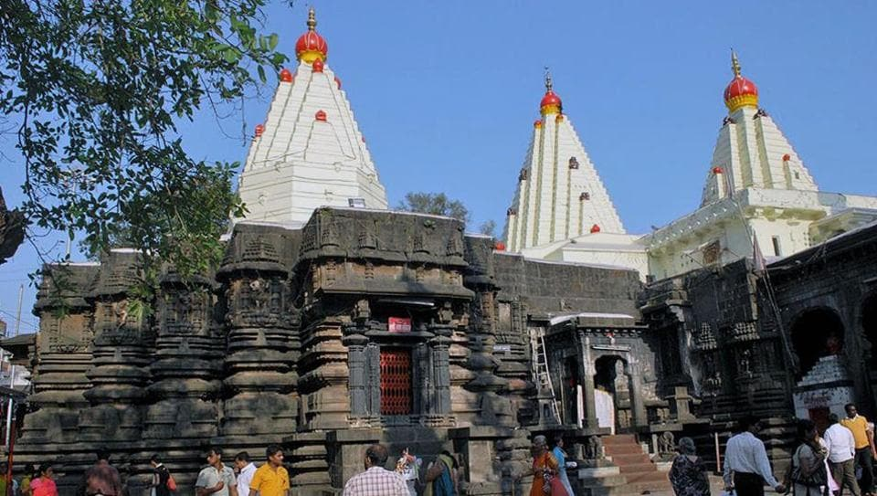

MAHALAXMI TEMPLE
The temple of the goddess Mahalakshmi was built by Karnadeva in 634 CE Chalukya reign.Mounted on a stone platform, the murti of the crowned goddess is made of gemstone and weighs about 40 kilograms. The image of Mahalakshmi carved in black stone is 3 feet in height. The Shri Yantra is carved on one of the walls in the temple. A stone lion (the vahana of the goddess), stands behind the statue. The crown contains a five headed snake. Further, she holds a Matulinga fruit, mace, shield and a pānapātra (drinking bowl). In Lakshmi Sahasranama of Skanda Purana, Goddess Lakshmi is praised as "Om Karaveera Nivasiniye Namaha" means "Glory to the Goddess who lives in Karaveera" and as "Om Sesha Vasuki Samsevyaa Namaha" means "Glory to Goddess who is served by Adi Sesha and Vasuki". They are the 119th and 698th names of Lakshmi in Lakshmi Sahasranama. This is also the description mentioned in the Rahasya of Devi Mahatmya.Professor Prabhakar Malshe says, "The name of Karaveera is still locally used to denote the city of Kolhapur".Unlike most Hindu sacred images, which face north or east, the deity faces west (Pashchim). There is a small open window on the western wall, through which the light of the setting sun falls on the face of the image for three days around the 21st of each March and September.There are a number of other shrines in the courtyard to the Navagrahas, Surya, Mahishasuramardini, Vitthal-Rukmini, Shiva, Vishnu, Bhavani and others. Some of these images date back to the 11th century, while some are of recent origin. Also located in the courtyard is the temple tank "Manikarnika Kund", on whose bank is another shrine to Visweshwar Mahadev.
The temple belongs architecturally to the Chalukya empire and was first built in the 7th century.[5] The temple is referred to in multiple Puranas. There is evidence to show that the Konkan king Kamadeo, Chalukyas, Shilahara, Yadavas of Devagiri dynasties visited this city. Adi Shankaracharya also visited. Chhatrapati Shivaji Maharaj and Chhatrapati Sambhaji Maharaj ruled this area and they also visited the temple regularly.

In 109 CE, Karnadeo cut off the jungle and brought the temple to light. The existence goes back to the 8th century, according to Bhandarkar and Khare.[who?] Itihāsa Chakra indicates that the temple dates back to Mahājanapadā times. In the 8th century, the temple sank down due to an earthquake. In the 9th century, Gandavadix (King) extended the temple by building Mahakali Mandir. During 1178–1209, in the reign of Raja Jaysing and Sindhava, South gate and Atibaleshwar Temple were built. In 1218, Yadav king Tolum built Mahadwar and offered jewels to Devi. Further, Shilaharas built Maha Sarasvati Mandir. He being a Jain, got 64 idols carved. It is possible that a new idol called Padmavati was installed at that time.Historian Paul Dundas in his book The Jains[6] mentions that Mahalaxmi temple Kolhapur was a Jain temple.[7][8] Sheshashayee Vishnu which is an octagonal structure closer to the eastern gate has a panel of 60 Jain Tirthankaras carvings.[9][10] Jains worshipped the idol in the temple as Padmalaya or the abode of Padma or Padmavati, an epithet of Goddess Lakshmi.[11] Further, in Chalukya times, Ganapati before the temple was installed. In the 13th century, Shankaracharya built Nagar Khana and Office, Deepmalas.
Later during the time of Maratha Empire, the temple was repaired. Though many invasions over this part of India have caused some damages of the beautiful idols which are all around the temple.
During Mughal reign, the worshippers had hidden the idol for protection. During(Chhatrapati Sambhaji II's Reign, Narhar Bhat Shastree had a dream by goddess Mahalakshmi informing him of her location, which he told to Chhatrapati.[citation needed]. Believing Sangavakar's dream, Chhatrapati Sambhaji started a search. This idol was found in a house in Kapila Teertha Market in the city. According to Chhatrapati Sambhaji's letter dated 8 November 1723, Sindhoji Hindurao Ghorpade of Panhala installed the idol again on 26 September 1712 (Monday, Ashwin Vijaya Dashami). The number of devotees grew, and in due course of time, the Devi became the Deity of Maharashtra. The deity began to denude due to Abhishekas. So the then Shankaracharya of Sankeshwar got it repaired. After Vajralep and sacrifices, it was again installed by Shahajee Raje of Kolhapur in 1954. There are 5 main temples and 7 Deepamalas now. Around are 35 temples of various sizes and 20 shops. There are 5 Hemad-style tops and a Garud Mandap. Sheshashayee Vishnu which is an octagonal structure closer to the eastern gate has a panel of 60 Jain Tirthankaras carvings.